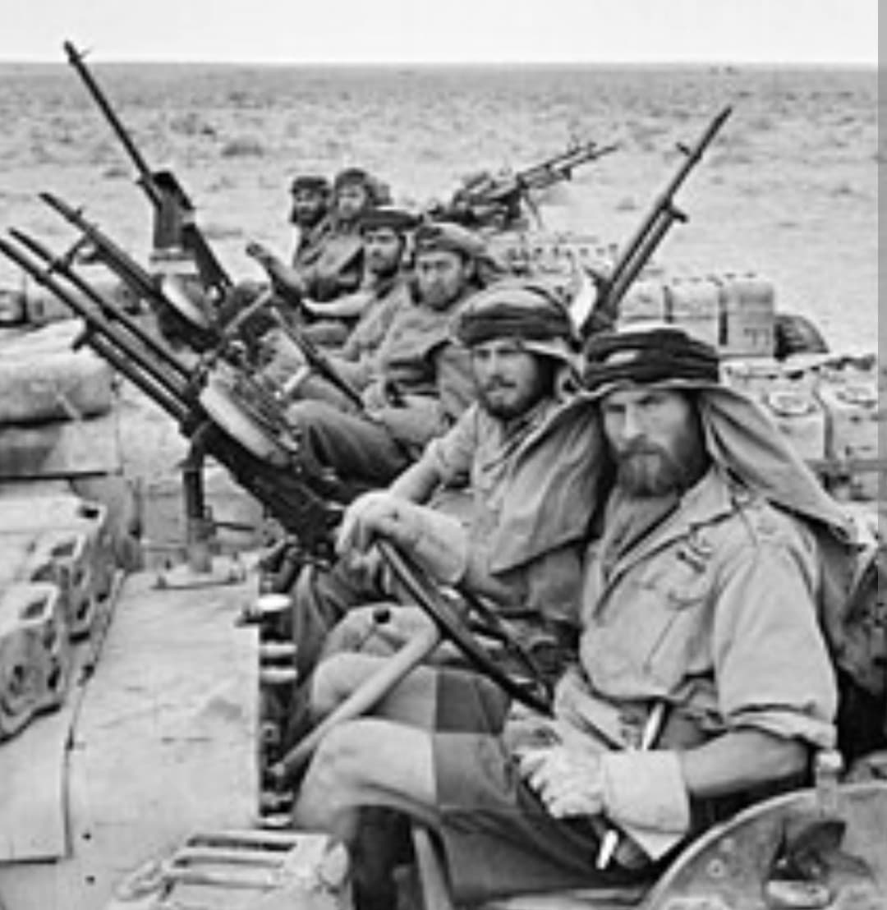
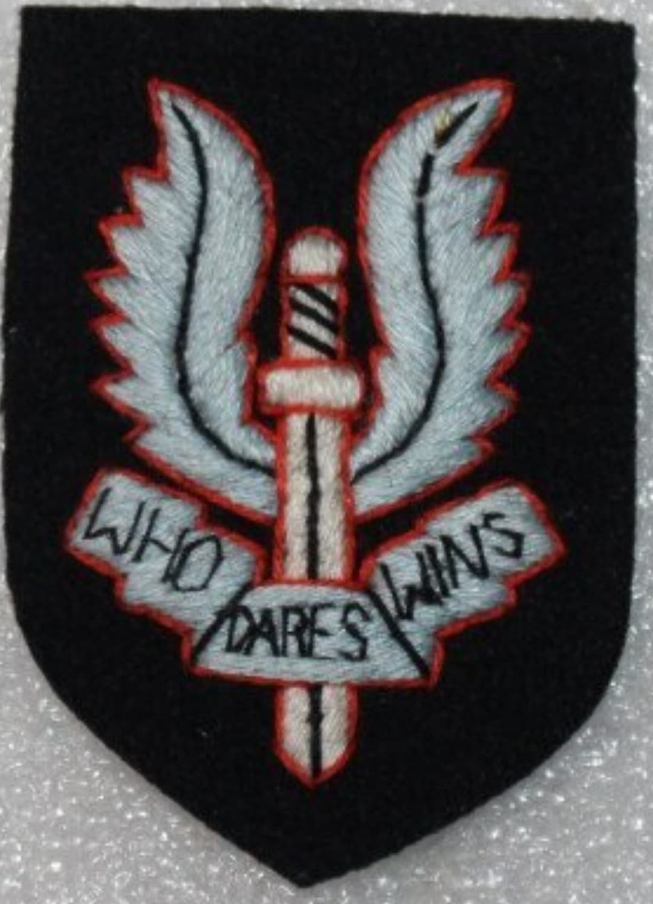
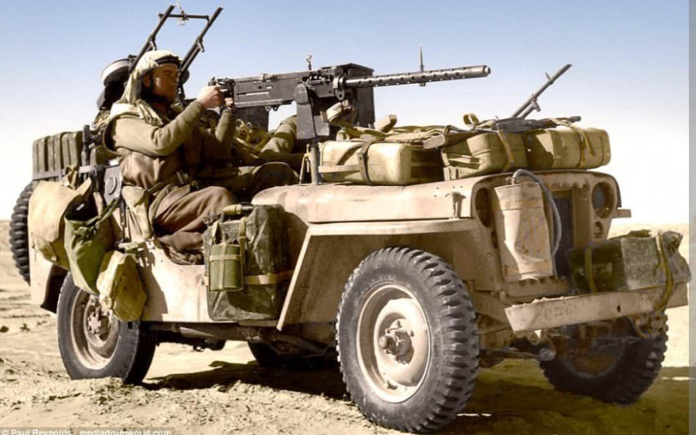

Les pionniers de la guerre subversive et clandestine : des raids audacieux de David Stirling dans le désert aux opérations de sabotage en Europe occupée

Le Special Air Service (SAS) est sans doute le régiment de forces spéciales le plus célèbre et respecté au monde. Né dans le chaos et le sable du désert nord-africain en 1941, le SAS a été forgé pour frapper l'ennemi là où il s'y attendait le moins, en plein cœur de ses lignes arrière.
Fondé sur l'audace, l'autonomie totale et l'innovation tactique par des officiers d'exception comme **David Stirling**, le régiment a immortalisé sa devise légendaire : « Who Dares Wins » (« Qui ose gagne »).
À l'été 1941, le lieutenant **David Stirling** imagine qu'un petit groupe d'hommes ultra-mobiles et parachutés ou infiltrés peut détruire plus d'avions ennemis au sol que toute une armée ennemie au combat. Pour tromper l'ennemi et faire croire à l'existence d'une brigade aéroportée fantôme entière, l'unité est baptisée initialement « L Detachment, Special Air Service Brigade ».
Équipés de jeeps armées de mitrailleuses Vickers et calées pour le désert, les opérateurs du SAS mènent des raids fulgurants de nuit contre les aérodromes de l'Axe, pulvérisant des dizaines d'appareils ennemis au sol sans éveiller de soupçons avant de disparaître dans l'immensité du Sahara.

Après la campagne d'Afrique du Nord, le SAS s'étend et participe aux débarquements en Sicile et en Italie, avant de se structurer en régiments complets (notamment avec l'intégration des célèbres unités françaises libres du 2e RCP / 4th SAS du commandant Bourgoin).
À partir de l'été 1944, les jeeps du SAS et les équipes de saut parachutées en civil ou en uniforme sont massivement engagées derrière les lignes allemandes en France (opérations *Bulbasket*, *Houndsworth*, etc.) et dans les Ardennes. En liaison étroite avec la Résistance intérieure, ils harcèlent les convois ennemis, coupent les voies de communication et sèment la panique avant l'avancée des armées régulières.

Au terme du conflit en mai 1945, malgré des pertes douloureuses et de magnifiques faits d'armes salués par les Alliés, le SAS est initialement dissous avant d'être rapidement recréé face aux nouveaux défis de la guerre froide, devenant le modèle universel de toutes les forces spéciales modernes.
Page du Musée HOP WW2 – Section Unités & Divisions